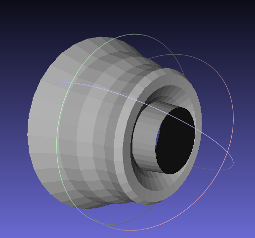

by
Mudit Pandey - 2014A7PS017H
Sagar Gupta - 2014A7PS030H
Vedic Sharma - 2014B4A7424H
Bezier Curves and Surface of Revolution
_________________________________________________________We implemented De Casteljau's algorithm to form a Bezier curve. The user can add new points on the canvas by using the left button of the mouse. The user can also reposition the points by clicking on the point and dragging the mouse to the new location. Deletion of points can also be performed by hovering over the required point and clicking the right mouse button. A few extra operations like undo are also provided.
We implement the algorithm by using an array of points given the user. The input points are stored in an array. The points on the required Bezier curve are calcuated using repeated linear interpolations (De Casteljau's algorithm). Upon modification of any point by the user, the curve is recalculated.
Surface of revolution of the Bezier curve is calculated about the y-axis. The user can generate the surface by pressing the 'f' key on the keyboard. 11 vertices equally spaced on the parameter t, are taken in to an array. These vertices are then revolved alon the y-axis every 5 degrees and stored in another array. A data structure is used to store the polygon mesh generated by the revolution. The data structure is implemented as follows:
We use the OFF format to render the mesh in 3D MeshLab.
